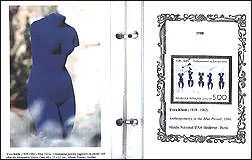
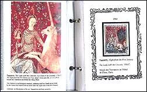
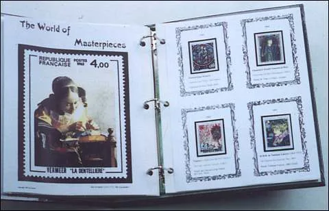

Art Trivia
From the original Art on Stamps archive


The page of Francis Kolarits, USA The Answers, and how to find them, by using THE WORLD OF MASTERPIECES (the questions and answers of the quiz are not only interesting but also educational) 1. What is common among the three painters: Raphael, van Gogh, and Toulouse-Lautrec ? Each one had a short life of 37 years: Raphael (1483-1520), van Gogh (1853-1890), Toulouse-Lautrec (1864-1901). Please include Watteau (1684-1721), he also died at the age of 37. How to find out: simple arithmetic after inspection of corresponding album pages 2. The world's longest tapestry is 338 feet long. What is the name of this masterpiece? "Apocalypse" of Angers . How to find out: check Index Tapestry and look at the pages and the illustrations, (the answer is obvious by using elimination). 3. One of the world's oldest known sculpture is about 25,000 years. How tall is it ?: A. taller than 2 feet, B. 1 foot, C. 6 inches, D. less then 2 inches. D. less then 2 inches. It is the "Lady of Brassempouy," 1.25 inches high. She is located in the Museum of Antiquity in St. Germain-en Laye. How to find out: check Tableau of Art Periods ....Prehistoric Times and look at the illustration of the above. 4. The 12th century Church of Saint-Savin is called by many as the Romanesque Sistine Chapel. It is famous because of its: A. architecture, B. sculpture, C. paintings, D. all of the three. C. Paintings. How to find out: Examine illustration of Church of St. Savin (the answer seems obvious). 5. Who was this artist? His painting of a horse with his rider brought him unusual fame when he was 19, but it was the horse who caused his death at the age of 33. Théodore Géricault (1791-1824). How to find out: The stamp image, the illustration and the 33 years of the artist's life leave no doubts. 6. Constance Mayer (1775-1821), an artist herself, cut her throat with the master's razor, Jeanne Hébuterne (1898-1920), committed suicide the day after the artist's death, Camille Claudel (1864-1943), an accomplished sculptress, became insane of despair. Who were the men, loved by those women artists? Pierre-Paul Prud'hon (1758-1823), Amedeo Modigliani (1884-1920), Auguste Rodin (1840-1917). How to find out: For C. Mayer look the Index at Neoclassicism and Romanticism, an illustration will reveal that it is Prud'hon. For J. Hébuterne look for album page with artist who died in 1920. For C. Claudel go to Index and find her album page, illustration and her tragic story with Rodin. 7. Once upon a time there were three young brothers, they worked and died together in 1416. Their work left unfinished. In spite of that it is usually referred to as "the king of the manuscript illumination". Who were these three great artists? Limbourg brothers, Herman, Jean and Pol, who painted the "Les Très Riches Heures du Duc de Berry," How to find out: The year of death (1416) should give a clue to go to the Summary of Art Periods and Artistic Movements: see 15th century and then Index, Middle-Ages, Christian Arts, etc., and finally to the picture of the Limbourgs. 8. There are only 36 known canvases from this celebrated Baroque artist. One of the smallest of them can be seen in the Louvre. It seems that the size did not bother neither Renoir or Dali, who were fascinated by this picture. What is its name? The Lacemaker (La Dentellière), by Jan Vermeer (1632-1675). How to find out: go to Baroque Art, look at illustrations of the Baroque Artists to find out that the Lacemaker by Vermeer has unusually small dimensions. 9. Perhaps he was the greatest non-Italian artist of the Renaissance. He painted three self portraits which are displayed in the following museums: Louvre (Paris), Prado (Madrid), and Alte Pinakothek (Munich). Who was this great artist? Albrecht Dürer (1471-1528), from Germany. How to find out: Find Renaissance in the Index, then search for an artist who has his Self-portrait. There is only one: that of Dürer's. 10. He wanted to be a painter but ended as a designer and brought vivacity into the French Typography. You have just read one of his many creations the "Mistral" script based on his own handwriting. Who was this gifted man? Roger Excoffon (1910-1983). How to find out: go to the Typography in the Index and familiarize with the artists and their works until you find mentioning the "Mistral" script. Answers You can find answers to all this questions and enter the wonderful world of arts by collecting the French Art Series and by using "The World of Masterpieces". For more information please send an e-mail to: Francis Kolarits Links: French Art Series Louvre - French Artists Louvre - Foreign Artists
The Answers, and how to find them, by using THE WORLD OF MASTERPIECES (the questions and answers of the quiz are not only interesting but also educational) 1. What is common among the three painters: Raphael, van Gogh, and Toulouse-Lautrec ? Each one had a short life of 37 years: Raphael (1483-1520), van Gogh (1853-1890), Toulouse-Lautrec (1864-1901). Please include Watteau (1684-1721), he also died at the age of 37. How to find out: simple arithmetic after inspection of corresponding album pages 2. The world's longest tapestry is 338 feet long. What is the name of this masterpiece? "Apocalypse" of Angers . How to find out: check Index Tapestry and look at the pages and the illustrations, (the answer is obvious by using elimination). 3. One of the world's oldest known sculpture is about 25,000 years. How tall is it ?: A. taller than 2 feet, B. 1 foot, C. 6 inches, D. less then 2 inches. D. less then 2 inches. It is the "Lady of Brassempouy," 1.25 inches high. She is located in the Museum of Antiquity in St. Germain-en Laye. How to find out: check Tableau of Art Periods ....Prehistoric Times and look at the illustration of the above. 4. The 12th century Church of Saint-Savin is called by many as the Romanesque Sistine Chapel. It is famous because of its: A. architecture, B. sculpture, C. paintings, D. all of the three. C. Paintings. How to find out: Examine illustration of Church of St. Savin (the answer seems obvious). 5. Who was this artist? His painting of a horse with his rider brought him unusual fame when he was 19, but it was the horse who caused his death at the age of 33. Théodore Géricault (1791-1824). How to find out: The stamp image, the illustration and the 33 years of the artist's life leave no doubts. 6. Constance Mayer (1775-1821), an artist herself, cut her throat with the master's razor, Jeanne Hébuterne (1898-1920), committed suicide the day after the artist's death, Camille Claudel (1864-1943), an accomplished sculptress, became insane of despair. Who were the men, loved by those women artists? Pierre-Paul Prud'hon (1758-1823), Amedeo Modigliani (1884-1920), Auguste Rodin (1840-1917). How to find out: For C. Mayer look the Index at Neoclassicism and Romanticism, an illustration will reveal that it is Prud'hon. For J. Hébuterne look for album page with artist who died in 1920. For C. Claudel go to Index and find her album page, illustration and her tragic story with Rodin. 7. Once upon a time there were three young brothers, they worked and died together in 1416. Their work left unfinished. In spite of that it is usually referred to as "the king of the manuscript illumination". Who were these three great artists? Limbourg brothers, Herman, Jean and Pol, who painted the "Les Très Riches Heures du Duc de Berry," How to find out: The year of death (1416) should give a clue to go to the Summary of Art Periods and Artistic Movements: see 15th century and then Index, Middle-Ages, Christian Arts, etc., and finally to the picture of the Limbourgs. 8. There are only 36 known canvases from this celebrated Baroque artist. One of the smallest of them can be seen in the Louvre. It seems that the size did not bother neither Renoir or Dali, who were fascinated by this picture. What is its name? The Lacemaker (La Dentellière), by Jan Vermeer (1632-1675). How to find out: go to Baroque Art, look at illustrations of the Baroque Artists to find out that the Lacemaker by Vermeer has unusually small dimensions. 9. Perhaps he was the greatest non-Italian artist of the Renaissance. He painted three self portraits which are displayed in the following museums: Louvre (Paris), Prado (Madrid), and Alte Pinakothek (Munich). Who was this great artist? Albrecht Dürer (1471-1528), from Germany. How to find out: Find Renaissance in the Index, then search for an artist who has his Self-portrait. There is only one: that of Dürer's. 10. He wanted to be a painter but ended as a designer and brought vivacity into the French Typography. You have just read one of his many creations the "Mistral" script based on his own handwriting. Who was this gifted man? Roger Excoffon (1910-1983). How to find out: go to the Typography in the Index and familiarize with the artists and their works until you find mentioning the "Mistral" script. Answers You can find answers to all this questions and enter the wonderful world of arts by collecting the French Art Series and by using "The World of Masterpieces". For more information please send an e-mail to: Francis Kolarits Links: French Art Series Louvre - French Artists Louvre - Foreign Artists
(the questions and answers of the quiz are not only interesting but also educational) 1. What is common among the three painters: Raphael, van Gogh, and Toulouse-Lautrec ? Each one had a short life of 37 years: Raphael (1483-1520), van Gogh (1853-1890), Toulouse-Lautrec (1864-1901). Please include Watteau (1684-1721), he also died at the age of 37. How to find out: simple arithmetic after inspection of corresponding album pages 2. The world's longest tapestry is 338 feet long. What is the name of this masterpiece? "Apocalypse" of Angers . How to find out: check Index Tapestry and look at the pages and the illustrations, (the answer is obvious by using elimination). 3. One of the world's oldest known sculpture is about 25,000 years. How tall is it ?: A. taller than 2 feet, B. 1 foot, C. 6 inches, D. less then 2 inches. D. less then 2 inches. It is the "Lady of Brassempouy," 1.25 inches high. She is located in the Museum of Antiquity in St. Germain-en Laye. How to find out: check Tableau of Art Periods ....Prehistoric Times and look at the illustration of the above. 4. The 12th century Church of Saint-Savin is called by many as the Romanesque Sistine Chapel. It is famous because of its: A. architecture, B. sculpture, C. paintings, D. all of the three. C. Paintings. How to find out: Examine illustration of Church of St. Savin (the answer seems obvious). 5. Who was this artist? His painting of a horse with his rider brought him unusual fame when he was 19, but it was the horse who caused his death at the age of 33. Théodore Géricault (1791-1824). How to find out: The stamp image, the illustration and the 33 years of the artist's life leave no doubts. 6. Constance Mayer (1775-1821), an artist herself, cut her throat with the master's razor, Jeanne Hébuterne (1898-1920), committed suicide the day after the artist's death, Camille Claudel (1864-1943), an accomplished sculptress, became insane of despair. Who were the men, loved by those women artists? Pierre-Paul Prud'hon (1758-1823), Amedeo Modigliani (1884-1920), Auguste Rodin (1840-1917). How to find out: For C. Mayer look the Index at Neoclassicism and Romanticism, an illustration will reveal that it is Prud'hon. For J. Hébuterne look for album page with artist who died in 1920. For C. Claudel go to Index and find her album page, illustration and her tragic story with Rodin. 7. Once upon a time there were three young brothers, they worked and died together in 1416. Their work left unfinished. In spite of that it is usually referred to as "the king of the manuscript illumination". Who were these three great artists? Limbourg brothers, Herman, Jean and Pol, who painted the "Les Très Riches Heures du Duc de Berry," How to find out: The year of death (1416) should give a clue to go to the Summary of Art Periods and Artistic Movements: see 15th century and then Index, Middle-Ages, Christian Arts, etc., and finally to the picture of the Limbourgs. 8. There are only 36 known canvases from this celebrated Baroque artist. One of the smallest of them can be seen in the Louvre. It seems that the size did not bother neither Renoir or Dali, who were fascinated by this picture. What is its name? The Lacemaker (La Dentellière), by Jan Vermeer (1632-1675). How to find out: go to Baroque Art, look at illustrations of the Baroque Artists to find out that the Lacemaker by Vermeer has unusually small dimensions. 9. Perhaps he was the greatest non-Italian artist of the Renaissance. He painted three self portraits which are displayed in the following museums: Louvre (Paris), Prado (Madrid), and Alte Pinakothek (Munich). Who was this great artist? Albrecht Dürer (1471-1528), from Germany. How to find out: Find Renaissance in the Index, then search for an artist who has his Self-portrait. There is only one: that of Dürer's. 10. He wanted to be a painter but ended as a designer and brought vivacity into the French Typography. You have just read one of his many creations the "Mistral" script based on his own handwriting. Who was this gifted man? Roger Excoffon (1910-1983). How to find out: go to the Typography in the Index and familiarize with the artists and their works until you find mentioning the "Mistral" script. Answers You can find answers to all this questions and enter the wonderful world of arts by collecting the French Art Series and by using "The World of Masterpieces". For more information please send an e-mail to: Francis Kolarits Links: French Art Series Louvre - French Artists Louvre - Foreign Artists
1. What is common among the three painters: Raphael, van Gogh, and Toulouse-Lautrec ? Each one had a short life of 37 years: Raphael (1483-1520), van Gogh (1853-1890), Toulouse-Lautrec (1864-1901). Please include Watteau (1684-1721), he also died at the age of 37. How to find out: simple arithmetic after inspection of corresponding album pages 2. The world's longest tapestry is 338 feet long. What is the name of this masterpiece? "Apocalypse" of Angers . How to find out: check Index Tapestry and look at the pages and the illustrations, (the answer is obvious by using elimination). 3. One of the world's oldest known sculpture is about 25,000 years. How tall is it ?: A. taller than 2 feet, B. 1 foot, C. 6 inches, D. less then 2 inches. D. less then 2 inches. It is the "Lady of Brassempouy," 1.25 inches high. She is located in the Museum of Antiquity in St. Germain-en Laye. How to find out: check Tableau of Art Periods ....Prehistoric Times and look at the illustration of the above. 4. The 12th century Church of Saint-Savin is called by many as the Romanesque Sistine Chapel. It is famous because of its: A. architecture, B. sculpture, C. paintings, D. all of the three. C. Paintings. How to find out: Examine illustration of Church of St. Savin (the answer seems obvious). 5. Who was this artist? His painting of a horse with his rider brought him unusual fame when he was 19, but it was the horse who caused his death at the age of 33. Théodore Géricault (1791-1824). How to find out: The stamp image, the illustration and the 33 years of the artist's life leave no doubts. 6. Constance Mayer (1775-1821), an artist herself, cut her throat with the master's razor, Jeanne Hébuterne (1898-1920), committed suicide the day after the artist's death, Camille Claudel (1864-1943), an accomplished sculptress, became insane of despair. Who were the men, loved by those women artists? Pierre-Paul Prud'hon (1758-1823), Amedeo Modigliani (1884-1920), Auguste Rodin (1840-1917). How to find out: For C. Mayer look the Index at Neoclassicism and Romanticism, an illustration will reveal that it is Prud'hon. For J. Hébuterne look for album page with artist who died in 1920. For C. Claudel go to Index and find her album page, illustration and her tragic story with Rodin. 7. Once upon a time there were three young brothers, they worked and died together in 1416. Their work left unfinished. In spite of that it is usually referred to as "the king of the manuscript illumination". Who were these three great artists? Limbourg brothers, Herman, Jean and Pol, who painted the "Les Très Riches Heures du Duc de Berry," How to find out: The year of death (1416) should give a clue to go to the Summary of Art Periods and Artistic Movements: see 15th century and then Index, Middle-Ages, Christian Arts, etc., and finally to the picture of the Limbourgs. 8. There are only 36 known canvases from this celebrated Baroque artist. One of the smallest of them can be seen in the Louvre. It seems that the size did not bother neither Renoir or Dali, who were fascinated by this picture. What is its name? The Lacemaker (La Dentellière), by Jan Vermeer (1632-1675). How to find out: go to Baroque Art, look at illustrations of the Baroque Artists to find out that the Lacemaker by Vermeer has unusually small dimensions. 9. Perhaps he was the greatest non-Italian artist of the Renaissance. He painted three self portraits which are displayed in the following museums: Louvre (Paris), Prado (Madrid), and Alte Pinakothek (Munich). Who was this great artist? Albrecht Dürer (1471-1528), from Germany. How to find out: Find Renaissance in the Index, then search for an artist who has his Self-portrait. There is only one: that of Dürer's. 10. He wanted to be a painter but ended as a designer and brought vivacity into the French Typography. You have just read one of his many creations the "Mistral" script based on his own handwriting. Who was this gifted man? Roger Excoffon (1910-1983). How to find out: go to the Typography in the Index and familiarize with the artists and their works until you find mentioning the "Mistral" script. Answers You can find answers to all this questions and enter the wonderful world of arts by collecting the French Art Series and by using "The World of Masterpieces". For more information please send an e-mail to: Francis Kolarits Links: French Art Series Louvre - French Artists Louvre - Foreign Artists
Each one had a short life of 37 years: Raphael (1483-1520), van Gogh (1853-1890), Toulouse-Lautrec (1864-1901). Please include Watteau (1684-1721), he also died at the age of 37. How to find out: simple arithmetic after inspection of corresponding album pages 2. The world's longest tapestry is 338 feet long. What is the name of this masterpiece? "Apocalypse" of Angers . How to find out: check Index Tapestry and look at the pages and the illustrations, (the answer is obvious by using elimination). 3. One of the world's oldest known sculpture is about 25,000 years. How tall is it ?: A. taller than 2 feet, B. 1 foot, C. 6 inches, D. less then 2 inches. D. less then 2 inches. It is the "Lady of Brassempouy," 1.25 inches high. She is located in the Museum of Antiquity in St. Germain-en Laye. How to find out: check Tableau of Art Periods ....Prehistoric Times and look at the illustration of the above. 4. The 12th century Church of Saint-Savin is called by many as the Romanesque Sistine Chapel. It is famous because of its: A. architecture, B. sculpture, C. paintings, D. all of the three. C. Paintings. How to find out: Examine illustration of Church of St. Savin (the answer seems obvious). 5. Who was this artist? His painting of a horse with his rider brought him unusual fame when he was 19, but it was the horse who caused his death at the age of 33. Théodore Géricault (1791-1824). How to find out: The stamp image, the illustration and the 33 years of the artist's life leave no doubts. 6. Constance Mayer (1775-1821), an artist herself, cut her throat with the master's razor, Jeanne Hébuterne (1898-1920), committed suicide the day after the artist's death, Camille Claudel (1864-1943), an accomplished sculptress, became insane of despair. Who were the men, loved by those women artists? Pierre-Paul Prud'hon (1758-1823), Amedeo Modigliani (1884-1920), Auguste Rodin (1840-1917). How to find out: For C. Mayer look the Index at Neoclassicism and Romanticism, an illustration will reveal that it is Prud'hon. For J. Hébuterne look for album page with artist who died in 1920. For C. Claudel go to Index and find her album page, illustration and her tragic story with Rodin. 7. Once upon a time there were three young brothers, they worked and died together in 1416. Their work left unfinished. In spite of that it is usually referred to as "the king of the manuscript illumination". Who were these three great artists? Limbourg brothers, Herman, Jean and Pol, who painted the "Les Très Riches Heures du Duc de Berry," How to find out: The year of death (1416) should give a clue to go to the Summary of Art Periods and Artistic Movements: see 15th century and then Index, Middle-Ages, Christian Arts, etc., and finally to the picture of the Limbourgs. 8. There are only 36 known canvases from this celebrated Baroque artist. One of the smallest of them can be seen in the Louvre. It seems that the size did not bother neither Renoir or Dali, who were fascinated by this picture. What is its name? The Lacemaker (La Dentellière), by Jan Vermeer (1632-1675). How to find out: go to Baroque Art, look at illustrations of the Baroque Artists to find out that the Lacemaker by Vermeer has unusually small dimensions. 9. Perhaps he was the greatest non-Italian artist of the Renaissance. He painted three self portraits which are displayed in the following museums: Louvre (Paris), Prado (Madrid), and Alte Pinakothek (Munich). Who was this great artist? Albrecht Dürer (1471-1528), from Germany. How to find out: Find Renaissance in the Index, then search for an artist who has his Self-portrait. There is only one: that of Dürer's. 10. He wanted to be a painter but ended as a designer and brought vivacity into the French Typography. You have just read one of his many creations the "Mistral" script based on his own handwriting. Who was this gifted man? Roger Excoffon (1910-1983). How to find out: go to the Typography in the Index and familiarize with the artists and their works until you find mentioning the "Mistral" script. Answers You can find answers to all this questions and enter the wonderful world of arts by collecting the French Art Series and by using "The World of Masterpieces". For more information please send an e-mail to: Francis Kolarits Links: French Art Series Louvre - French Artists Louvre - Foreign Artists
"Apocalypse" of Angers . How to find out: check Index Tapestry and look at the pages and the illustrations, (the answer is obvious by using elimination). 3. One of the world's oldest known sculpture is about 25,000 years. How tall is it ?: A. taller than 2 feet, B. 1 foot, C. 6 inches, D. less then 2 inches. D. less then 2 inches. It is the "Lady of Brassempouy," 1.25 inches high. She is located in the Museum of Antiquity in St. Germain-en Laye. How to find out: check Tableau of Art Periods ....Prehistoric Times and look at the illustration of the above. 4. The 12th century Church of Saint-Savin is called by many as the Romanesque Sistine Chapel. It is famous because of its: A. architecture, B. sculpture, C. paintings, D. all of the three. C. Paintings. How to find out: Examine illustration of Church of St. Savin (the answer seems obvious). 5. Who was this artist? His painting of a horse with his rider brought him unusual fame when he was 19, but it was the horse who caused his death at the age of 33. Théodore Géricault (1791-1824). How to find out: The stamp image, the illustration and the 33 years of the artist's life leave no doubts. 6. Constance Mayer (1775-1821), an artist herself, cut her throat with the master's razor, Jeanne Hébuterne (1898-1920), committed suicide the day after the artist's death, Camille Claudel (1864-1943), an accomplished sculptress, became insane of despair. Who were the men, loved by those women artists? Pierre-Paul Prud'hon (1758-1823), Amedeo Modigliani (1884-1920), Auguste Rodin (1840-1917). How to find out: For C. Mayer look the Index at Neoclassicism and Romanticism, an illustration will reveal that it is Prud'hon. For J. Hébuterne look for album page with artist who died in 1920. For C. Claudel go to Index and find her album page, illustration and her tragic story with Rodin. 7. Once upon a time there were three young brothers, they worked and died together in 1416. Their work left unfinished. In spite of that it is usually referred to as "the king of the manuscript illumination". Who were these three great artists? Limbourg brothers, Herman, Jean and Pol, who painted the "Les Très Riches Heures du Duc de Berry," How to find out: The year of death (1416) should give a clue to go to the Summary of Art Periods and Artistic Movements: see 15th century and then Index, Middle-Ages, Christian Arts, etc., and finally to the picture of the Limbourgs. 8. There are only 36 known canvases from this celebrated Baroque artist. One of the smallest of them can be seen in the Louvre. It seems that the size did not bother neither Renoir or Dali, who were fascinated by this picture. What is its name? The Lacemaker (La Dentellière), by Jan Vermeer (1632-1675). How to find out: go to Baroque Art, look at illustrations of the Baroque Artists to find out that the Lacemaker by Vermeer has unusually small dimensions. 9. Perhaps he was the greatest non-Italian artist of the Renaissance. He painted three self portraits which are displayed in the following museums: Louvre (Paris), Prado (Madrid), and Alte Pinakothek (Munich). Who was this great artist? Albrecht Dürer (1471-1528), from Germany. How to find out: Find Renaissance in the Index, then search for an artist who has his Self-portrait. There is only one: that of Dürer's. 10. He wanted to be a painter but ended as a designer and brought vivacity into the French Typography. You have just read one of his many creations the "Mistral" script based on his own handwriting. Who was this gifted man? Roger Excoffon (1910-1983). How to find out: go to the Typography in the Index and familiarize with the artists and their works until you find mentioning the "Mistral" script. Answers You can find answers to all this questions and enter the wonderful world of arts by collecting the French Art Series and by using "The World of Masterpieces". For more information please send an e-mail to: Francis Kolarits Links: French Art Series Louvre - French Artists Louvre - Foreign Artists
3. One of the world's oldest known sculpture is about 25,000 years. How tall is it ?: A. taller than 2 feet, B. 1 foot, C. 6 inches, D. less then 2 inches. D. less then 2 inches. It is the "Lady of Brassempouy," 1.25 inches high. She is located in the Museum of Antiquity in St. Germain-en Laye. How to find out: check Tableau of Art Periods ....Prehistoric Times and look at the illustration of the above. 4. The 12th century Church of Saint-Savin is called by many as the Romanesque Sistine Chapel. It is famous because of its: A. architecture, B. sculpture, C. paintings, D. all of the three. C. Paintings. How to find out: Examine illustration of Church of St. Savin (the answer seems obvious). 5. Who was this artist? His painting of a horse with his rider brought him unusual fame when he was 19, but it was the horse who caused his death at the age of 33. Théodore Géricault (1791-1824). How to find out: The stamp image, the illustration and the 33 years of the artist's life leave no doubts. 6. Constance Mayer (1775-1821), an artist herself, cut her throat with the master's razor, Jeanne Hébuterne (1898-1920), committed suicide the day after the artist's death, Camille Claudel (1864-1943), an accomplished sculptress, became insane of despair. Who were the men, loved by those women artists? Pierre-Paul Prud'hon (1758-1823), Amedeo Modigliani (1884-1920), Auguste Rodin (1840-1917). How to find out: For C. Mayer look the Index at Neoclassicism and Romanticism, an illustration will reveal that it is Prud'hon. For J. Hébuterne look for album page with artist who died in 1920. For C. Claudel go to Index and find her album page, illustration and her tragic story with Rodin. 7. Once upon a time there were three young brothers, they worked and died together in 1416. Their work left unfinished. In spite of that it is usually referred to as "the king of the manuscript illumination". Who were these three great artists? Limbourg brothers, Herman, Jean and Pol, who painted the "Les Très Riches Heures du Duc de Berry," How to find out: The year of death (1416) should give a clue to go to the Summary of Art Periods and Artistic Movements: see 15th century and then Index, Middle-Ages, Christian Arts, etc., and finally to the picture of the Limbourgs. 8. There are only 36 known canvases from this celebrated Baroque artist. One of the smallest of them can be seen in the Louvre. It seems that the size did not bother neither Renoir or Dali, who were fascinated by this picture. What is its name? The Lacemaker (La Dentellière), by Jan Vermeer (1632-1675). How to find out: go to Baroque Art, look at illustrations of the Baroque Artists to find out that the Lacemaker by Vermeer has unusually small dimensions. 9. Perhaps he was the greatest non-Italian artist of the Renaissance. He painted three self portraits which are displayed in the following museums: Louvre (Paris), Prado (Madrid), and Alte Pinakothek (Munich). Who was this great artist? Albrecht Dürer (1471-1528), from Germany. How to find out: Find Renaissance in the Index, then search for an artist who has his Self-portrait. There is only one: that of Dürer's. 10. He wanted to be a painter but ended as a designer and brought vivacity into the French Typography. You have just read one of his many creations the "Mistral" script based on his own handwriting. Who was this gifted man? Roger Excoffon (1910-1983). How to find out: go to the Typography in the Index and familiarize with the artists and their works until you find mentioning the "Mistral" script. Answers You can find answers to all this questions and enter the wonderful world of arts by collecting the French Art Series and by using "The World of Masterpieces". For more information please send an e-mail to: Francis Kolarits Links: French Art Series Louvre - French Artists Louvre - Foreign Artists
D. less then 2 inches. It is the "Lady of Brassempouy," 1.25 inches high. She is located in the Museum of Antiquity in St. Germain-en Laye. How to find out: check Tableau of Art Periods ....Prehistoric Times and look at the illustration of the above. 4. The 12th century Church of Saint-Savin is called by many as the Romanesque Sistine Chapel. It is famous because of its: A. architecture, B. sculpture, C. paintings, D. all of the three. C. Paintings. How to find out: Examine illustration of Church of St. Savin (the answer seems obvious). 5. Who was this artist? His painting of a horse with his rider brought him unusual fame when he was 19, but it was the horse who caused his death at the age of 33. Théodore Géricault (1791-1824). How to find out: The stamp image, the illustration and the 33 years of the artist's life leave no doubts. 6. Constance Mayer (1775-1821), an artist herself, cut her throat with the master's razor, Jeanne Hébuterne (1898-1920), committed suicide the day after the artist's death, Camille Claudel (1864-1943), an accomplished sculptress, became insane of despair. Who were the men, loved by those women artists? Pierre-Paul Prud'hon (1758-1823), Amedeo Modigliani (1884-1920), Auguste Rodin (1840-1917). How to find out: For C. Mayer look the Index at Neoclassicism and Romanticism, an illustration will reveal that it is Prud'hon. For J. Hébuterne look for album page with artist who died in 1920. For C. Claudel go to Index and find her album page, illustration and her tragic story with Rodin. 7. Once upon a time there were three young brothers, they worked and died together in 1416. Their work left unfinished. In spite of that it is usually referred to as "the king of the manuscript illumination". Who were these three great artists? Limbourg brothers, Herman, Jean and Pol, who painted the "Les Très Riches Heures du Duc de Berry," How to find out: The year of death (1416) should give a clue to go to the Summary of Art Periods and Artistic Movements: see 15th century and then Index, Middle-Ages, Christian Arts, etc., and finally to the picture of the Limbourgs. 8. There are only 36 known canvases from this celebrated Baroque artist. One of the smallest of them can be seen in the Louvre. It seems that the size did not bother neither Renoir or Dali, who were fascinated by this picture. What is its name? The Lacemaker (La Dentellière), by Jan Vermeer (1632-1675). How to find out: go to Baroque Art, look at illustrations of the Baroque Artists to find out that the Lacemaker by Vermeer has unusually small dimensions. 9. Perhaps he was the greatest non-Italian artist of the Renaissance. He painted three self portraits which are displayed in the following museums: Louvre (Paris), Prado (Madrid), and Alte Pinakothek (Munich). Who was this great artist? Albrecht Dürer (1471-1528), from Germany. How to find out: Find Renaissance in the Index, then search for an artist who has his Self-portrait. There is only one: that of Dürer's. 10. He wanted to be a painter but ended as a designer and brought vivacity into the French Typography. You have just read one of his many creations the "Mistral" script based on his own handwriting. Who was this gifted man? Roger Excoffon (1910-1983). How to find out: go to the Typography in the Index and familiarize with the artists and their works until you find mentioning the "Mistral" script. Answers You can find answers to all this questions and enter the wonderful world of arts by collecting the French Art Series and by using "The World of Masterpieces". For more information please send an e-mail to: Francis Kolarits Links: French Art Series Louvre - French Artists Louvre - Foreign Artists
4. The 12th century Church of Saint-Savin is called by many as the Romanesque Sistine Chapel. It is famous because of its: A. architecture, B. sculpture, C. paintings, D. all of the three. C. Paintings. How to find out: Examine illustration of Church of St. Savin (the answer seems obvious). 5. Who was this artist? His painting of a horse with his rider brought him unusual fame when he was 19, but it was the horse who caused his death at the age of 33. Théodore Géricault (1791-1824). How to find out: The stamp image, the illustration and the 33 years of the artist's life leave no doubts. 6. Constance Mayer (1775-1821), an artist herself, cut her throat with the master's razor, Jeanne Hébuterne (1898-1920), committed suicide the day after the artist's death, Camille Claudel (1864-1943), an accomplished sculptress, became insane of despair. Who were the men, loved by those women artists? Pierre-Paul Prud'hon (1758-1823), Amedeo Modigliani (1884-1920), Auguste Rodin (1840-1917). How to find out: For C. Mayer look the Index at Neoclassicism and Romanticism, an illustration will reveal that it is Prud'hon. For J. Hébuterne look for album page with artist who died in 1920. For C. Claudel go to Index and find her album page, illustration and her tragic story with Rodin. 7. Once upon a time there were three young brothers, they worked and died together in 1416. Their work left unfinished. In spite of that it is usually referred to as "the king of the manuscript illumination". Who were these three great artists? Limbourg brothers, Herman, Jean and Pol, who painted the "Les Très Riches Heures du Duc de Berry," How to find out: The year of death (1416) should give a clue to go to the Summary of Art Periods and Artistic Movements: see 15th century and then Index, Middle-Ages, Christian Arts, etc., and finally to the picture of the Limbourgs. 8. There are only 36 known canvases from this celebrated Baroque artist. One of the smallest of them can be seen in the Louvre. It seems that the size did not bother neither Renoir or Dali, who were fascinated by this picture. What is its name? The Lacemaker (La Dentellière), by Jan Vermeer (1632-1675). How to find out: go to Baroque Art, look at illustrations of the Baroque Artists to find out that the Lacemaker by Vermeer has unusually small dimensions. 9. Perhaps he was the greatest non-Italian artist of the Renaissance. He painted three self portraits which are displayed in the following museums: Louvre (Paris), Prado (Madrid), and Alte Pinakothek (Munich). Who was this great artist? Albrecht Dürer (1471-1528), from Germany. How to find out: Find Renaissance in the Index, then search for an artist who has his Self-portrait. There is only one: that of Dürer's. 10. He wanted to be a painter but ended as a designer and brought vivacity into the French Typography. You have just read one of his many creations the "Mistral" script based on his own handwriting. Who was this gifted man? Roger Excoffon (1910-1983). How to find out: go to the Typography in the Index and familiarize with the artists and their works until you find mentioning the "Mistral" script. Answers You can find answers to all this questions and enter the wonderful world of arts by collecting the French Art Series and by using "The World of Masterpieces". For more information please send an e-mail to: Francis Kolarits Links: French Art Series Louvre - French Artists Louvre - Foreign Artists
C. Paintings. How to find out: Examine illustration of Church of St. Savin (the answer seems obvious). 5. Who was this artist? His painting of a horse with his rider brought him unusual fame when he was 19, but it was the horse who caused his death at the age of 33. Théodore Géricault (1791-1824). How to find out: The stamp image, the illustration and the 33 years of the artist's life leave no doubts. 6. Constance Mayer (1775-1821), an artist herself, cut her throat with the master's razor, Jeanne Hébuterne (1898-1920), committed suicide the day after the artist's death, Camille Claudel (1864-1943), an accomplished sculptress, became insane of despair. Who were the men, loved by those women artists? Pierre-Paul Prud'hon (1758-1823), Amedeo Modigliani (1884-1920), Auguste Rodin (1840-1917). How to find out: For C. Mayer look the Index at Neoclassicism and Romanticism, an illustration will reveal that it is Prud'hon. For J. Hébuterne look for album page with artist who died in 1920. For C. Claudel go to Index and find her album page, illustration and her tragic story with Rodin. 7. Once upon a time there were three young brothers, they worked and died together in 1416. Their work left unfinished. In spite of that it is usually referred to as "the king of the manuscript illumination". Who were these three great artists? Limbourg brothers, Herman, Jean and Pol, who painted the "Les Très Riches Heures du Duc de Berry," How to find out: The year of death (1416) should give a clue to go to the Summary of Art Periods and Artistic Movements: see 15th century and then Index, Middle-Ages, Christian Arts, etc., and finally to the picture of the Limbourgs. 8. There are only 36 known canvases from this celebrated Baroque artist. One of the smallest of them can be seen in the Louvre. It seems that the size did not bother neither Renoir or Dali, who were fascinated by this picture. What is its name? The Lacemaker (La Dentellière), by Jan Vermeer (1632-1675). How to find out: go to Baroque Art, look at illustrations of the Baroque Artists to find out that the Lacemaker by Vermeer has unusually small dimensions. 9. Perhaps he was the greatest non-Italian artist of the Renaissance. He painted three self portraits which are displayed in the following museums: Louvre (Paris), Prado (Madrid), and Alte Pinakothek (Munich). Who was this great artist? Albrecht Dürer (1471-1528), from Germany. How to find out: Find Renaissance in the Index, then search for an artist who has his Self-portrait. There is only one: that of Dürer's. 10. He wanted to be a painter but ended as a designer and brought vivacity into the French Typography. You have just read one of his many creations the "Mistral" script based on his own handwriting. Who was this gifted man? Roger Excoffon (1910-1983). How to find out: go to the Typography in the Index and familiarize with the artists and their works until you find mentioning the "Mistral" script. Answers You can find answers to all this questions and enter the wonderful world of arts by collecting the French Art Series and by using "The World of Masterpieces". For more information please send an e-mail to: Francis Kolarits Links: French Art Series Louvre - French Artists Louvre - Foreign Artists
5. Who was this artist? His painting of a horse with his rider brought him unusual fame when he was 19, but it was the horse who caused his death at the age of 33. Théodore Géricault (1791-1824). How to find out: The stamp image, the illustration and the 33 years of the artist's life leave no doubts. 6. Constance Mayer (1775-1821), an artist herself, cut her throat with the master's razor, Jeanne Hébuterne (1898-1920), committed suicide the day after the artist's death, Camille Claudel (1864-1943), an accomplished sculptress, became insane of despair. Who were the men, loved by those women artists? Pierre-Paul Prud'hon (1758-1823), Amedeo Modigliani (1884-1920), Auguste Rodin (1840-1917). How to find out: For C. Mayer look the Index at Neoclassicism and Romanticism, an illustration will reveal that it is Prud'hon. For J. Hébuterne look for album page with artist who died in 1920. For C. Claudel go to Index and find her album page, illustration and her tragic story with Rodin. 7. Once upon a time there were three young brothers, they worked and died together in 1416. Their work left unfinished. In spite of that it is usually referred to as "the king of the manuscript illumination". Who were these three great artists? Limbourg brothers, Herman, Jean and Pol, who painted the "Les Très Riches Heures du Duc de Berry," How to find out: The year of death (1416) should give a clue to go to the Summary of Art Periods and Artistic Movements: see 15th century and then Index, Middle-Ages, Christian Arts, etc., and finally to the picture of the Limbourgs. 8. There are only 36 known canvases from this celebrated Baroque artist. One of the smallest of them can be seen in the Louvre. It seems that the size did not bother neither Renoir or Dali, who were fascinated by this picture. What is its name? The Lacemaker (La Dentellière), by Jan Vermeer (1632-1675). How to find out: go to Baroque Art, look at illustrations of the Baroque Artists to find out that the Lacemaker by Vermeer has unusually small dimensions. 9. Perhaps he was the greatest non-Italian artist of the Renaissance. He painted three self portraits which are displayed in the following museums: Louvre (Paris), Prado (Madrid), and Alte Pinakothek (Munich). Who was this great artist? Albrecht Dürer (1471-1528), from Germany. How to find out: Find Renaissance in the Index, then search for an artist who has his Self-portrait. There is only one: that of Dürer's. 10. He wanted to be a painter but ended as a designer and brought vivacity into the French Typography. You have just read one of his many creations the "Mistral" script based on his own handwriting. Who was this gifted man? Roger Excoffon (1910-1983). How to find out: go to the Typography in the Index and familiarize with the artists and their works until you find mentioning the "Mistral" script. Answers You can find answers to all this questions and enter the wonderful world of arts by collecting the French Art Series and by using "The World of Masterpieces". For more information please send an e-mail to: Francis Kolarits Links: French Art Series Louvre - French Artists Louvre - Foreign Artists
Théodore Géricault (1791-1824). How to find out: The stamp image, the illustration and the 33 years of the artist's life leave no doubts. 6. Constance Mayer (1775-1821), an artist herself, cut her throat with the master's razor, Jeanne Hébuterne (1898-1920), committed suicide the day after the artist's death, Camille Claudel (1864-1943), an accomplished sculptress, became insane of despair. Who were the men, loved by those women artists? Pierre-Paul Prud'hon (1758-1823), Amedeo Modigliani (1884-1920), Auguste Rodin (1840-1917). How to find out: For C. Mayer look the Index at Neoclassicism and Romanticism, an illustration will reveal that it is Prud'hon. For J. Hébuterne look for album page with artist who died in 1920. For C. Claudel go to Index and find her album page, illustration and her tragic story with Rodin. 7. Once upon a time there were three young brothers, they worked and died together in 1416. Their work left unfinished. In spite of that it is usually referred to as "the king of the manuscript illumination". Who were these three great artists? Limbourg brothers, Herman, Jean and Pol, who painted the "Les Très Riches Heures du Duc de Berry," How to find out: The year of death (1416) should give a clue to go to the Summary of Art Periods and Artistic Movements: see 15th century and then Index, Middle-Ages, Christian Arts, etc., and finally to the picture of the Limbourgs. 8. There are only 36 known canvases from this celebrated Baroque artist. One of the smallest of them can be seen in the Louvre. It seems that the size did not bother neither Renoir or Dali, who were fascinated by this picture. What is its name? The Lacemaker (La Dentellière), by Jan Vermeer (1632-1675). How to find out: go to Baroque Art, look at illustrations of the Baroque Artists to find out that the Lacemaker by Vermeer has unusually small dimensions. 9. Perhaps he was the greatest non-Italian artist of the Renaissance. He painted three self portraits which are displayed in the following museums: Louvre (Paris), Prado (Madrid), and Alte Pinakothek (Munich). Who was this great artist? Albrecht Dürer (1471-1528), from Germany. How to find out: Find Renaissance in the Index, then search for an artist who has his Self-portrait. There is only one: that of Dürer's. 10. He wanted to be a painter but ended as a designer and brought vivacity into the French Typography. You have just read one of his many creations the "Mistral" script based on his own handwriting. Who was this gifted man? Roger Excoffon (1910-1983). How to find out: go to the Typography in the Index and familiarize with the artists and their works until you find mentioning the "Mistral" script. Answers You can find answers to all this questions and enter the wonderful world of arts by collecting the French Art Series and by using "The World of Masterpieces". For more information please send an e-mail to: Francis Kolarits Links: French Art Series Louvre - French Artists Louvre - Foreign Artists
6. Constance Mayer (1775-1821), an artist herself, cut her throat with the master's razor, Jeanne Hébuterne (1898-1920), committed suicide the day after the artist's death, Camille Claudel (1864-1943), an accomplished sculptress, became insane of despair. Who were the men, loved by those women artists? Pierre-Paul Prud'hon (1758-1823), Amedeo Modigliani (1884-1920), Auguste Rodin (1840-1917). How to find out: For C. Mayer look the Index at Neoclassicism and Romanticism, an illustration will reveal that it is Prud'hon. For J. Hébuterne look for album page with artist who died in 1920. For C. Claudel go to Index and find her album page, illustration and her tragic story with Rodin.
7. Once upon a time there were three young brothers, they worked and died together in 1416. Their work left unfinished. In spite of that it is usually referred to as "the king of the manuscript illumination". Who were these three great artists?
Limbourg brothers, Herman, Jean and Pol, who painted the "Les Très Riches Heures du Duc de Berry," How to find out: The year of death (1416) should give a clue to go to the Summary of Art Periods and Artistic Movements: see 15th century and then Index, Middle-Ages, Christian Arts, etc., and finally to the picture of the Limbourgs. 8. There are only 36 known canvases from this celebrated Baroque artist. One of the smallest of them can be seen in the Louvre. It seems that the size did not bother neither Renoir or Dali, who were fascinated by this picture. What is its name? The Lacemaker (La Dentellière), by Jan Vermeer (1632-1675). How to find out: go to Baroque Art, look at illustrations of the Baroque Artists to find out that the Lacemaker by Vermeer has unusually small dimensions. 9. Perhaps he was the greatest non-Italian artist of the Renaissance. He painted three self portraits which are displayed in the following museums: Louvre (Paris), Prado (Madrid), and Alte Pinakothek (Munich). Who was this great artist? Albrecht Dürer (1471-1528), from Germany. How to find out: Find Renaissance in the Index, then search for an artist who has his Self-portrait. There is only one: that of Dürer's. 10. He wanted to be a painter but ended as a designer and brought vivacity into the French Typography. You have just read one of his many creations the "Mistral" script based on his own handwriting. Who was this gifted man? Roger Excoffon (1910-1983). How to find out: go to the Typography in the Index and familiarize with the artists and their works until you find mentioning the "Mistral" script. Answers You can find answers to all this questions and enter the wonderful world of arts by collecting the French Art Series and by using "The World of Masterpieces". For more information please send an e-mail to: Francis Kolarits Links: French Art Series Louvre - French Artists Louvre - Foreign Artists
8. There are only 36 known canvases from this celebrated Baroque artist. One of the smallest of them can be seen in the Louvre. It seems that the size did not bother neither Renoir or Dali, who were fascinated by this picture. What is its name? The Lacemaker (La Dentellière), by Jan Vermeer (1632-1675). How to find out: go to Baroque Art, look at illustrations of the Baroque Artists to find out that the Lacemaker by Vermeer has unusually small dimensions. 9. Perhaps he was the greatest non-Italian artist of the Renaissance. He painted three self portraits which are displayed in the following museums: Louvre (Paris), Prado (Madrid), and Alte Pinakothek (Munich). Who was this great artist? Albrecht Dürer (1471-1528), from Germany. How to find out: Find Renaissance in the Index, then search for an artist who has his Self-portrait. There is only one: that of Dürer's. 10. He wanted to be a painter but ended as a designer and brought vivacity into the French Typography. You have just read one of his many creations the "Mistral" script based on his own handwriting. Who was this gifted man? Roger Excoffon (1910-1983). How to find out: go to the Typography in the Index and familiarize with the artists and their works until you find mentioning the "Mistral" script. Answers You can find answers to all this questions and enter the wonderful world of arts by collecting the French Art Series and by using "The World of Masterpieces". For more information please send an e-mail to: Francis Kolarits Links: French Art Series Louvre - French Artists Louvre - Foreign Artists
The Lacemaker (La Dentellière), by Jan Vermeer (1632-1675). How to find out: go to Baroque Art, look at illustrations of the Baroque Artists to find out that the Lacemaker by Vermeer has unusually small dimensions. 9. Perhaps he was the greatest non-Italian artist of the Renaissance. He painted three self portraits which are displayed in the following museums: Louvre (Paris), Prado (Madrid), and Alte Pinakothek (Munich). Who was this great artist? Albrecht Dürer (1471-1528), from Germany. How to find out: Find Renaissance in the Index, then search for an artist who has his Self-portrait. There is only one: that of Dürer's. 10. He wanted to be a painter but ended as a designer and brought vivacity into the French Typography. You have just read one of his many creations the "Mistral" script based on his own handwriting. Who was this gifted man? Roger Excoffon (1910-1983). How to find out: go to the Typography in the Index and familiarize with the artists and their works until you find mentioning the "Mistral" script. Answers You can find answers to all this questions and enter the wonderful world of arts by collecting the French Art Series and by using "The World of Masterpieces". For more information please send an e-mail to: Francis Kolarits Links: French Art Series Louvre - French Artists Louvre - Foreign Artists
9. Perhaps he was the greatest non-Italian artist of the Renaissance. He painted three self portraits which are displayed in the following museums: Louvre (Paris), Prado (Madrid), and Alte Pinakothek (Munich). Who was this great artist? Albrecht Dürer (1471-1528), from Germany. How to find out: Find Renaissance in the Index, then search for an artist who has his Self-portrait. There is only one: that of Dürer's. 10. He wanted to be a painter but ended as a designer and brought vivacity into the French Typography. You have just read one of his many creations the "Mistral" script based on his own handwriting. Who was this gifted man? Roger Excoffon (1910-1983). How to find out: go to the Typography in the Index and familiarize with the artists and their works until you find mentioning the "Mistral" script. Answers You can find answers to all this questions and enter the wonderful world of arts by collecting the French Art Series and by using "The World of Masterpieces". For more information please send an e-mail to: Francis Kolarits Links: French Art Series Louvre - French Artists Louvre - Foreign Artists
Albrecht Dürer (1471-1528), from Germany. How to find out: Find Renaissance in the Index, then search for an artist who has his Self-portrait. There is only one: that of Dürer's. 10. He wanted to be a painter but ended as a designer and brought vivacity into the French Typography. You have just read one of his many creations the "Mistral" script based on his own handwriting. Who was this gifted man? Roger Excoffon (1910-1983). How to find out: go to the Typography in the Index and familiarize with the artists and their works until you find mentioning the "Mistral" script. Answers You can find answers to all this questions and enter the wonderful world of arts by collecting the French Art Series and by using "The World of Masterpieces". For more information please send an e-mail to: Francis Kolarits Links: French Art Series Louvre - French Artists Louvre - Foreign Artists
10. He wanted to be a painter but ended as a designer and brought vivacity into the French Typography. You have just read one of his many creations the "Mistral" script based on his own handwriting. Who was this gifted man? Roger Excoffon (1910-1983). How to find out: go to the Typography in the Index and familiarize with the artists and their works until you find mentioning the "Mistral" script. Answers You can find answers to all this questions and enter the wonderful world of arts by collecting the French Art Series and by using "The World of Masterpieces". For more information please send an e-mail to: Francis Kolarits Links: French Art Series Louvre - French Artists Louvre - Foreign Artists
Roger Excoffon (1910-1983). How to find out: go to the Typography in the Index and familiarize with the artists and their works until you find mentioning the "Mistral" script. Answers You can find answers to all this questions and enter the wonderful world of arts by collecting the French Art Series and by using "The World of Masterpieces". For more information please send an e-mail to: Francis Kolarits Links: French Art Series Louvre - French Artists Louvre - Foreign Artists
Answers You can find answers to all this questions and enter the wonderful world of arts by collecting the French Art Series and by using "The World of Masterpieces". For more information please send an e-mail to: Francis Kolarits Links: French Art Series Louvre - French Artists Louvre - Foreign Artists
You can find answers to all this questions and enter the wonderful world of arts by collecting the French Art Series and by using "The World of Masterpieces".
For more information please send an e-mail to: Francis Kolarits

Links: French Art Series Louvre - French Artists Louvre - Foreign Artists